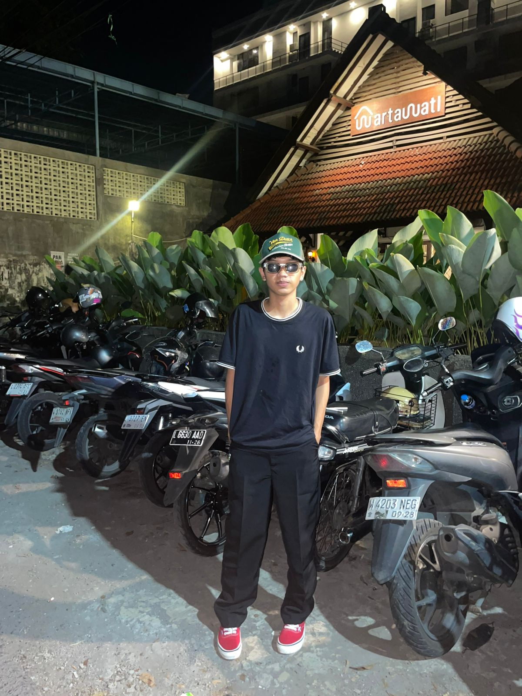

SMK RAJASA SURABAYA
Fokus pada administrasi server Linux, konfigurasi MikroTik, dan manajemen bandwidth jaringan sekolah.
SYSTEM_STATUS: ONLINE // ACCESSING_PORTFOLIO...
Computer and Network Engineering Student at SMK RAJASA
Exploring the intersection of Networking, Web Dev, and Retro Aesthetics.

Halo! Saya Akmal Nasrillah, siswa kelas XI di SMK RAJASA Surabaya. Saya mendalami jurusan Teknik Komputer dan Jaringan (TKJ), di mana saya belajar cara membangun dan mengamankan infrastruktur digital.
Sebagai siswa SMK, saya dididik untuk memiliki keahlian praktis yang siap kerja. Saya memiliki minat besar dalam integrasi sistem, troubleshooting jaringan, dan pengembangan aplikasi web modern.
MOTTO: "Connecting the World, One Packet at a Time."
Fokus pada administrasi server Linux, konfigurasi MikroTik, dan manajemen bandwidth jaringan sekolah.
Membantu dalam maintenance infrastruktur jaringan kantor, instalasi CCTV berbasis IP, dan troubleshooting hardware komputer.

Simulasi konfigurasi router dan switch menggunakan Cisco Packet Tracer untuk topologi jaringan skala menengah.

Website portofolio pribadi dengan tema CRT retro, menggunakan HTML, CSS modern, dan sentuhan nuansa 8-bit.

Dashboard sederhana untuk memantau status server lokal dan penggunaan resource jaringan secara real-time.